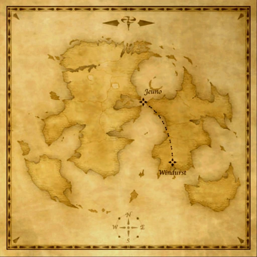

Description
Windurst-Jeuno Airship is an outdoor area in Airships.
Map

References
External references describe their own server or retail rules. Documented Zenith changes take precedence.
Map credits: Map 1 — HorizonXI Wiki. Original game maps © SQUARE ENIX; redrawn maps retain the credited authorship and license.

Additional level-75 reference
|
Table of Contents
|
Zone Information
| ||||||||||||||||||||||||||||||
|
Description
Providing access from The Federation of Windurst to The Grand Duchy of Jeuno, the airships provide a fast, reliable mode of transport for both travelers and cargo. This route was established shortly after the Bastok route. | |||||||||||||||||||||||||||||||
|
Connections
|
Other Information
Adapted from Eden Wiki: Windurst-Jeuno Airship · Contributors and history · CC BY-SA 4.0. Revision 35753. Layout, links and optional background text adapted for Zenith.